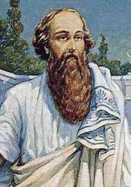

Піфагор Самоський - один із найвідоміших давньогрецьких філософів, містиків і математиків, творець релігійно-філософської школи. Якщо судити по короткій біографії Піфагора, то його життя було наповнене дивовижними подіями, і сучасники вважали його чи не найвидатнішим вченим усіх часів і народів, який знав усі таємниці Всесвіту.
